Slide Rule¶
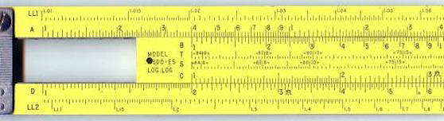
About¶
“The slide rule also known colloquially as a slipstick, is a mechanical analog computer.” This Activity implements a basic slide rule with C, D, A, and L scales and can be used for multiplication, division, roots, addition and subtraction.
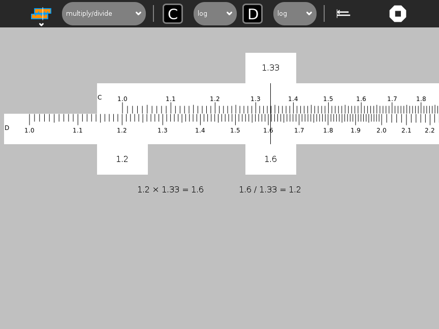
The C and D scales are used for multiplication and division.
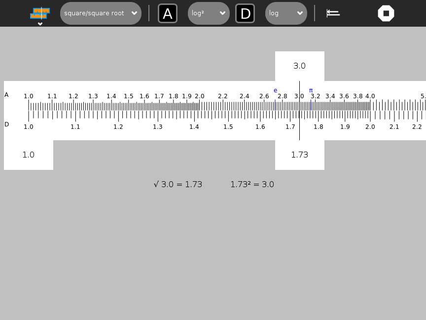
The A and D scales are used for squares and square roots.
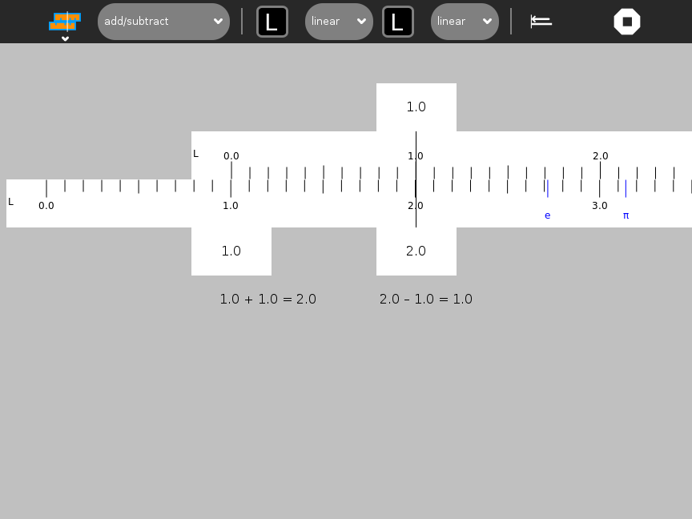
The L scales are used for addition and subtraction.
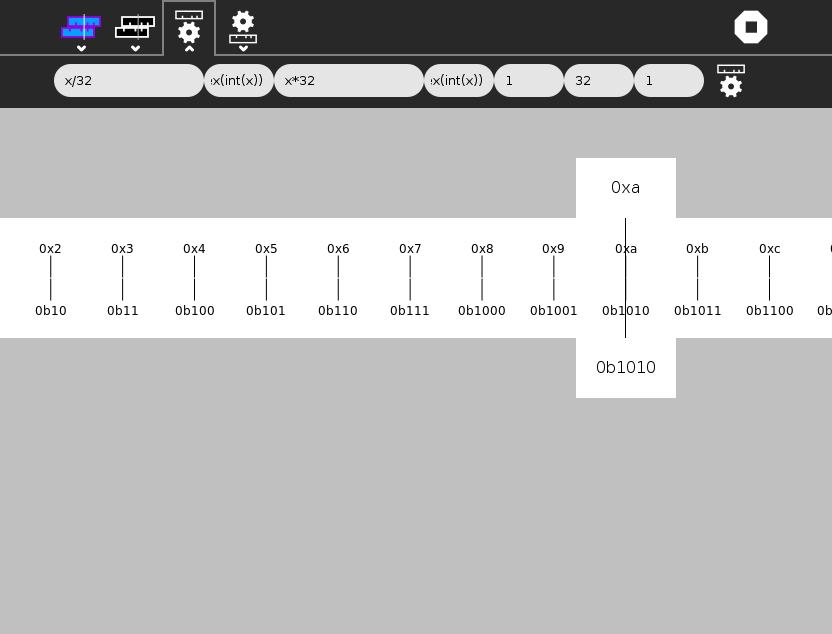
User-defined slides and stators can be created on the fly.
A nice discussion of the slide rule is found here http://www.ryereflections.org/servlet/pluto?state=3030347061676530303757656250616765303032696430303438373235
Using Slide Rule¶
The toolbars¶
There are four sub-menus from the main toolbar: the standard Activity Toolbar, the Project Toolbar and the Custom Slide Toolbar and the Custom Stator Toolbar.
The Project Toolbar from left to right: * function combo box used to selection a computation, e.g., addition/subtraction, multiplication/division, etc. * top-scale indicator * top-scale combo box: linear, log, log², log³, 1/log, sin, tan, log log, ln, and custom * bottom-scale indicator * bottom-scale combo box: linear, log, log², log³, 1/log, sin, tan, log log, ln, and custom * scale-alignment button (aligns top scale to bottom scale) * activity stop button
The results of the calculation are displayed below the slide rule.
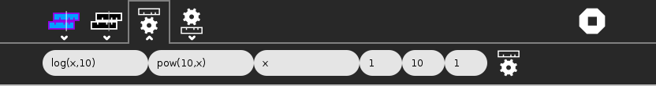
The Custom Slide Toolbar is used to make a custom slide. From left to right: * position function of x used to calculate the horizontal position of each mark along the slide or stator (the range of this function should be 0 to 1) * result function of x used to read a value from the slide or stator at the cursor or reticule (usually the inverse of the position function) * label function of x used to calculate a label for each mark (often identity) * the minimum value of x used in the functions domains * the maximum value of x used in the functions domains * the step size by which to iterate between minimum and maximum when generating marks * the gear-shaped button is used to create the custom slide
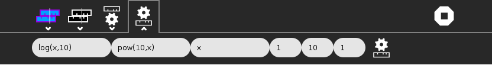
The Custom Stator Toolbar is identical in functionality to the Custom Slide Toolbar.
In the values shown in the illustration of the Custom Toolbar are used to generate a C (log) slide: * the position is determined by f*(*x) = log*(*x, 10) * the result (the inverse of f*(*x)) is f*⁻¹(*x) = pow*(10, *x) * the label is g*(*x) = x * the domain is from 1 to 10 * the step size is 1.
The keyboard shortcuts¶
c: log scale
i: 1/log scale
a: log² scale
k: log³ scale
s: sin scale
t: tan scale
Home: move all scales to “home” position
r: move reticle to home position
left arrow: jog slide left
right arrow: jog slide right
Note that you can type values directly into the tabs to position the slide and reticule.
How to use a slide rule¶
There are three parts to the slide rule: (1) the stator (fixed scale on the bottom); (2) the slide (a sliding scale on the top); and a reticule, which moves independently of the scales.
To move either the slide or reticle, drag it or use the arrow keys. You can also type into the labeled tabs to move to a specific value. (Note: The entire slide rule does not fit on the screen. By dragging on the stator, you can scroll the canvas to reveal different sections.)
Most calculations on a slide rule require three steps: # position the end of the slide above a number on the stator; # position the reticule over a number on slide; # read the result from the stator.
Note: You can read values from the fixed scale from either end of the sliding scale.
The Sliderule Activity displays these three values on tabs attached to the top slider and the reticule. The calculation is also displayed below the slide rule.
Note: The scales are all at a fixed scale. It is often necessary to move a decimal place in order to find the number you are looking for on the scale. It is up to the user to keep track and subsequently to estimate the decimal point in the final result.
Note: You typically get three significant digits of accuracy when using a slide rule.
Multiplication¶
To multiply, you use the C (log) slide and D (log) stator. (Addition in log scale is the same as multiplication in linear space.) First position the end of the C slide over one of the multiplicands on the D stator. Then position the reticule over the other multiplicand on the C slide. Read the result off of the D stator.
Example: 2 × 1.31 = 2.62
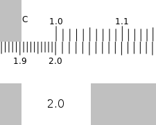
Position the end of the C slide over 2 on the D stator
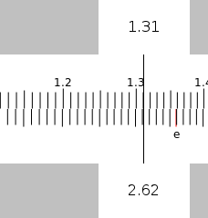
Position the reticule over 1.31 on the C slide and read the results (2.62) from the D stator.
Division¶
Division is the opposite of multiplication. First position the reticle over the dividend on the D stator. Then without moving the reticule, position the C slide so that the divisor is under the reticule. Read the quotient off of the D stator under the end of the C slide.
Example: 2.62 / 1.31 = 2
Position the reticule over 2.62 on the D stator. Position 1.31 on the C slide under the reticule.
Read the results from the D stator.
Overflow on Multiplication or Division¶
Sometimes the result of multiplication or division is off the end of the slide rule. For example 4 × 3 or 3/4. Here you can use the CI or inverse scale. To multiply you can divide by the inverse and to divide you can multiply by the inverse.
Square¶
You use the A slide and D stator to square number. (A is a log-squared scale.) Simply position the reticule of number you want to square on the D stator and read the result off of the A slide. Remember to properly estimate the proper decimal point for your result. Note: the slide and stator must be aligned in order to calculate the square of a number.
*e*² = 7.4
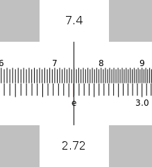
Position the reticule over e on the D stator and read the results off of the A slide.
Square root¶
You also use the A slide and D statr to find the square root of a number. Simply position the reticule of number you want to square on the A slide and read the result off of the D stator. (Remember to properly estimate the proper decimal point for your result.) Note: the slide and stator must be aligned in order to calculate the square root.
√𝜋 = 1.77
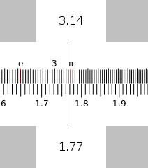
Position the reticule over 𝜋 on the A slide and read the results (1.77) off of the D stator.
Addition¶
To add you use the linear slides, L and L. First position the end of the top L slide over one of the addends on the lower L slide. Then position the reticule over the other addend on the upper L slide. Read the result off of the lower L slide.
Example: 1.1 + 2.1 = 3.2
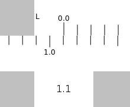
Position the end of the upper L slide over 1.1 on the lower L slide.
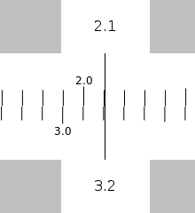
Position the reticule over 2.1 on the upper L slide and read the result (3.2) from the lower L slide.
Subtraction¶
To subtract, you also use the L (linear) slide and stator. Position the reticule over the minuend on the L stator. Without moving the reticle, position the L slide so that the subtrahend is also under the reticle. Read the difference from the L stator.
Example: 3.2 – 2.1 = 1.1
Position the reticule over the minuend (3.2) on the L stator and the subtrahend (2.1) on the L slide.
Read the difference (1.1) from the L stator.
How does it work?¶
Why does multiplication and division work on the C and D scales?
The multiplication of 100 by 1000 can be represented as 10² x 10³ = 10⁵, to multiply, just add the indices, in this case, 2+3=5. 2 and 3 are the logarithms of 100 and 1000 respectively.
To multiply, add the logarithms, to divide, subtract. See how the C and D scales are compressed to their right end . Though the scales are marked with numbers, their distance along the scales are proportional to the logarithms of those numbers. When two distances are added, the logarithms of the numbers are added, if logarithms are added, numbers are multiplied.
Tutorials¶
Just for fun¶
Tony Forster has created slide rules in Turtle Art, GameMaker, and Pippy.
Reporting problems¶
If you discover a bug in the program or have a suggestion for an enhancement, please create an issue